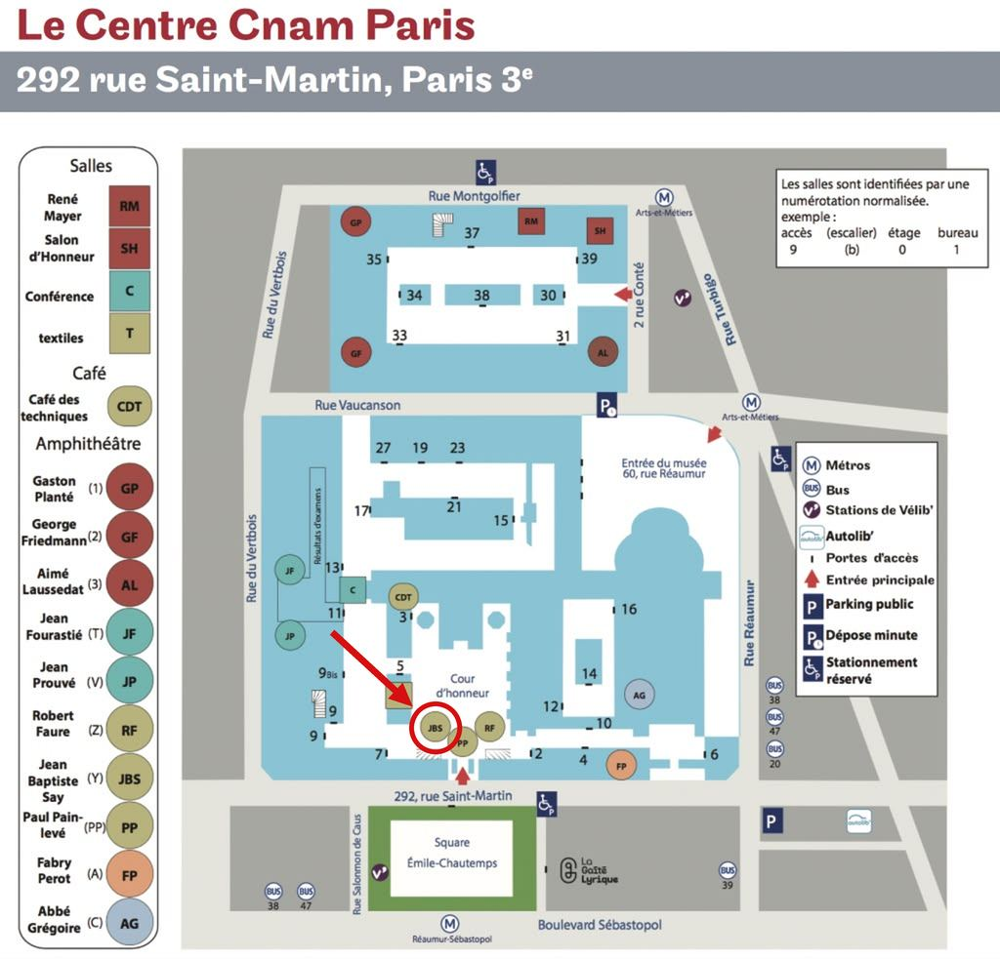

NTN Days 2026 is an event dedicated to Non-Terrestrial Networks, to be held on October 13–14, 2026, at Cnam in Paris. The objective of these days is to bring together academic and industrial communities working on the multiple challenges of non-terrestrial connectivity, spanning from the physical layer to networking and standardization.
Keynote and invited talks from international experts in non-terrestrial networking.
Thematic sessions and roundtables spanning the physical layer to networking and standardization.
Poster and presentation opportunities dedicated to PhD students.
Networking sessions and informal discussions connecting academia and industry.
A non-exhaustive list of the themes shaping the future of Non-Terrestrial Networks
Satellite constellations and swarm-based architectures
Integration of NTN into 5G/6G and beyond
Internet of Things connectivity via non-terrestrial networks
AI and machine learning for resource optimization
Delay-tolerant and resilient protocols
VLEO/LEO/MEO/GEO coordination
Standardization efforts and regulatory frameworks
NTN for Earth and Space Observation
Two keynotes, four technical sessions, a poster session and a roundtable over two days at Cnam. Talks are 15 minutes including questions. All times are Paris time (CEST).
Final program, published September 23, 2026.
From Vision to Validation: Univity's 5G NTN Journey slides
This keynote will introduce Univity's vision for 5G Non-Terrestrial Networks and present some of the key building blocks developed to turn that vision into a validated system. Through uniSpark, uniShape and the company's digital-twin environment, the presentation will highlight how architecture, emulation and end-to-end testing are used to progressively design, integrate and de-risk satellite-based 5G connectivity.
Hassan Fawaz is a 5G Software Architect at Univity, working on 5G NTN architecture, RAN/Core integration and system validation for satellite broadband networks. He holds a PhD in Telecommunications and previously worked in research on wireless resource management and AI/ML for networks.
IRIS², a catalyst for 5G NTN and European technological sovereignty
Flavien Ronteix · EC-JRC slides
Standalone standard satellite-aided Internet connectivity
Nicola Accettura · LAAS-CNRS slides
Beyond coverage: how mega-constellations will shape the future of non-terrestrial networks
Ali Khalesi · IPSA, LINCS slides
Interference-aware beam hopping scheduling for LEO satellite networks using soft-conflict graph coloring
Jihane Lghoury · IRIT, Ericsson slides
Doppler-Shannon association framework for non-terrestrial networks: going beyond closest point association
Ashutosh Balakrishnan · Télécom Paris
Radio astronomy protection for direct-to-device applications
Graeme Young · SKAO slides
Chirp-based waveform design for next generation non-terrestrial networks
Omar El Marzougui · Toulouse INP, IRIT slides
Study of ODDM on NTN channels for LEO satellite communications
Antony Pottier · CEA-Leti slides
Kinéis wide area network for satellite IoT: performance and protocol optimisation
Vincent Deslandes · Kinéis slides
NTN-IoT performance survey: from simulation to in-orbit testing
Antonin Le Floch · Kinéis slides
From ground to space: efficient downlink scheduling for direct-to-satellite LoRaWAN
Carlos Fernandez Hernandez · INSA Lyon, Inria slides
Breaking the GNSS dependency in direct-to-satellite cellular networks
Miguel Filipe · LAAS-CNRS
Time division multiple access for GNSS-free direct-to-satellite long range wide area networks
Florian Rolland · LAAS-CNRS
Energy-aware adaptive processing management for Open RAN UxNBs
Ali Srour · Cnam
Towards geolocating Starlink users from RTT timing, starting with recognition behind a VPN
Yanis Maatouk · Sorbonne Université
Demo OCUDU-SkyLink: extending OCUDU for multi-connectivity in space-terrestrial 6G networks
Stefano Taborelli · Cnam
Four posters and one live demo, with the presenters standing by their boards throughout the session.
The slides are online, talk by talk above, or
all of them on one page, session by session.
Add the full schedule to your calendar (.ics)
Two days at the Jean-Baptiste Say amphitheatre ·
In a picture you would rather not see here? Ask us to remove it.
Add NTN Days 2026 and its full schedule to your calendar (.ics)
Registration and the calls for talks and posters are closed. What the two days produced stays here: the presentations the speakers agreed to share, and the pictures.
One PDF per talk, in programme order, and a zip per session. Each talk in the programme links to its own deck.
Browse the slidesThe amphitheatre, the posters and the two evenings, as the organizers saw them.
See the picturesThe programme and the calendar file stay online as the record of this edition. The next one is NTN Days 2027 at IRISA, Rennes.
Hosted at the Conservatoire national des arts et métiers (Cnam) in the heart of Paris — a historic institution of science and technology since 1794.
292 Rue Saint-Martin, 75003 Paris, France

NTN Days has been bringing the French and international NTN communities together since 2023
IRISA, Rennes
The 5th edition moves to Rennes. Dates, call and website to be announced.
Cnam, Paris
October 13–14, 2026
LAAS-CNRS, Toulouse
October 1–2, 2025
Grenoble
October 17–18, 2024
IRIT/ENSEEIHT, Toulouse
October 19–20, 2023
Cnam
Inria
Cnam
Questions about the event? Write to juan.fraire@inria.fr.